step3 实验指导
词法语法分析
如果你使用工具完成词法语法分析，修改你的语法规范以满足要求，自行修改词法规范，剩下的交给工具即可。
对有兴趣的同学：虽然
-2和2-3里面的-意义不同，但 lexer 不知道这点（parser 才知道），所以它们都会用同样的 token kind-表示。 但有时，可能需要后续阶段告诉 lexer（或 parser）一些信息，最经典的例子是 “typedef-name identifier problem”。
我们的表达式语法规范和 C 标准的基本相同，但略显繁琐。 如果你选择的语法分析工具支持优先级和结合性，并且你希望用这些信息来简化语法分析工具的编写，请参考这里。
语义检查无需修改。
如果你是手写分析，参见这里。
IR 生成
我们同样引入一类 IR 表示二元操作。 执行二元操作的 IR 时，两个操作数需要位于栈顶，然后它们被弹出、进行相应操作，再把结果压入栈顶。
| 指令 | 参数 | 含义 | IR 栈大小变化 |
|---|---|---|---|
add |
无参数 | 弹出栈顶两个元素，压入它们的和 | 减少 1 |
sub |
无参数 | 弹出栈顶两个元素，压入它们的差，顺序如上 | 减少 1 |
mul、div、rem |
无参数 | ……乘除模 | 减少 1 |
其中我们规定二元操作的右操作数在栈顶，左操作数在右操作数下面。
举个例子，
(10-3)%5翻译成 IR 是[push 10 ; push 3 ; sub ; push 5 ; rem]五条指令， 执行过程中栈变化如图。 
类比 step2，生成 IR 时 Visitor 遍历 AST 遇到二元操作，需要（注意 1. 和 2. 的顺序）
- 首先生成左操作数的 IR（左操作数入栈，栈顶是左操作数）
- 然后生成右操作数的 IR（右操作数入栈，栈顶是右操作数)
- 根据操作不同生成对应的二元 IR
上面的 3 步执行完后，栈大小比执行第 1. 步以前增加 1，栈顶就是二元操作的结果。 这符合我们在 step1 中的假设：
考虑源代码中某个表达式被翻译成了一系列 IR 指令，那么从任何初始状态出发执行这些 IR 指令， 完成后 IR 栈大小增加 1，栈顶就是表达式的值。
汇编生成
仿照 step2 所说，用 gcc 自己确定 sub/mul/div/rem 的汇编。
| IR | 汇编 |
|---|---|
add |
lw t1, 4(sp) ; lw t2, 0(sp) ; add t1, t1, t2 ; addi sp, sp, 4 ; sw t1, 0(sp) |
sub,mul,div,rem |
…… |
思考题
请给出将寄存器
t0中的数值压入栈中所需的 riscv 汇编指令序列；请给出将栈顶的数值弹出到寄存器t0中所需的 riscv 汇编指令序列。语义规范中规定“除以零、模零都是未定义行为”，但是即使除法的右操作数不是 0，仍然可能存在未定义行为。请问这时除法的左操作数和右操作数分别是什么？请将这时除法的左操作数和右操作数填入下面的代码中，分别在你的电脑（请标明你的电脑的架构，比如 x86-64 或 ARM）中和 RISCV-32 的 qemu 模拟器中编译运行下面的代码，并给出运行结果。（编译时请不要开启任何编译优化）
#include <stdio.h>
int main() {
int a = 左操作数;
int b = 右操作数;
printf("%d\n", a / b);
return 0;
}
总结
本节重点是执行过程中栈的变化，以及上面提到的 step1 的假设，参见上面 IR 生成一节。